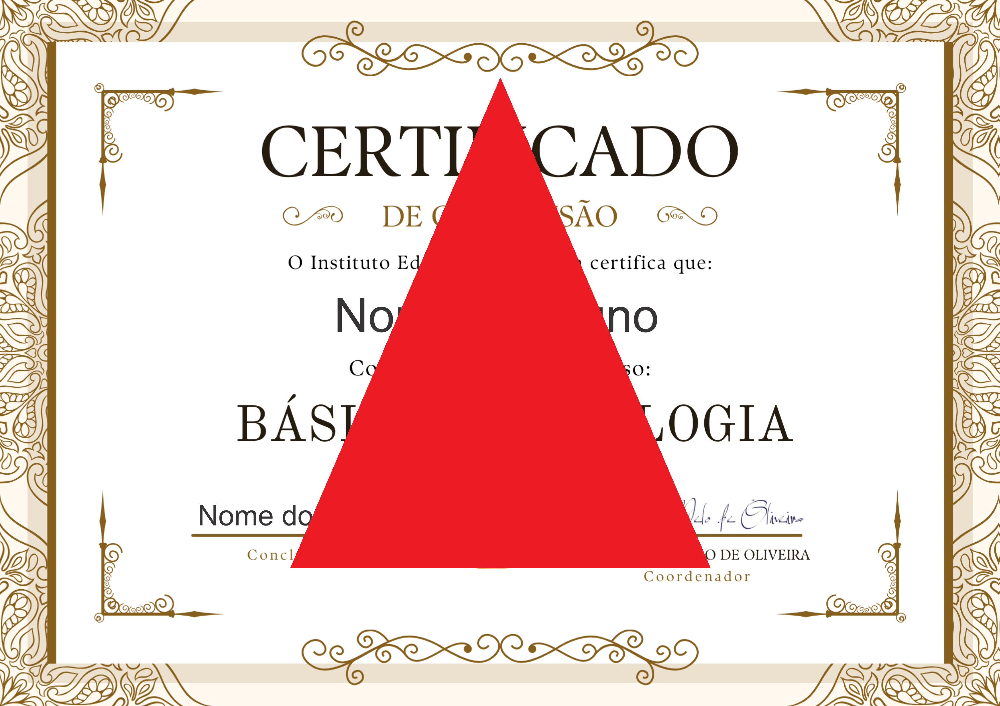
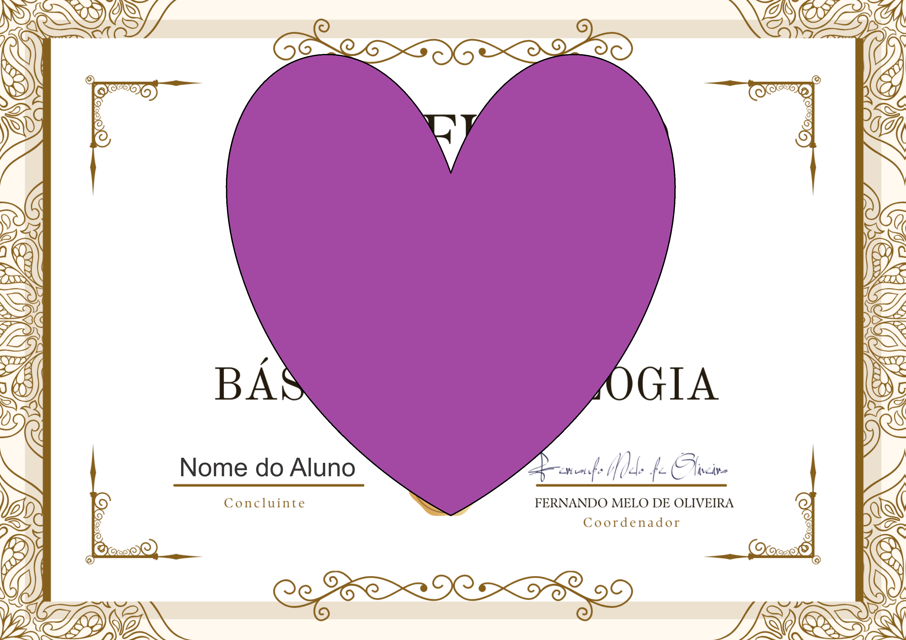

Gestalt-terapia
Uma abordagem voltada à consciência, ao aqui e agora e à integração das emoções, favorecendo percepção, autonomia e contato mais claro consigo.
Atendimento clínico com base em Gestalt-terapia e Psicologia Transpessoal, em Campo Grande ou online para todo o Brasil. Um espaço de escuta, presença e cuidado.

Minha prática clínica parte de um olhar integral sobre o ser humano. Trabalho com escuta qualificada, sigilo ético e atenção ao modo como cada pessoa organiza sua experiência no presente.
A terapia pode ser um caminho de autoconhecimento, elaboração emocional e crescimento pessoal. Como a Árvore da Vida, que conecta raízes e céu, o processo terapêutico nos reconecta à nossa essência mais profunda.
Atendimento presencial em Campo Grande e online para todo o Brasil.
Uma abordagem voltada à consciência, ao aqui e agora e à integração das emoções, favorecendo percepção, autonomia e contato mais claro consigo.
Trabalha crescimento pessoal, sentido e desenvolvimento da consciência, considerando dimensões subjetivas e espirituais da experiência humana — as raízes e os galhos que nos sustentam.
Em busca de oferecer um atendimento ainda mais profundo, sensível e qualificado, Lara Araújo buscou conhecimento além-fronteiras, incorporando ao seu trabalho uma abordagem exclusiva de padrão europeu.
Um saber terapêutico raro e inédito em toda a cidade, que une o rigor técnico internacional, escuta clínica refinada e a sensibilidade humana dedicada a cada história.


Encontrei na um espaço onde finalmente consegui me ouvir. A cada sessão, sentia como se as raízes dentro de mim ficassem um pouco mais firmes. Ela não apenas escuta — ela acolhe de verdade.
O processo com a me ajudou a entender padrões que eu carregava sem perceber. Com muita delicadeza e profundidade, ela me guiou para um reconhecimento de mim mesma que eu não sabia que era possível.
A abordagem transpessoal foi o que eu precisava para dar sentido ao que eu vivia. Saio de cada sessão mais inteiro, mais conectado. A tem um dom raro: presença genuína.
Mais do que teorias e títulos, a clínica se consolida na transformação vivida por cada paciente. Assista ao compilado de relatos e sinta a atmosfera de acolhimento, escuta atenta e respeito que conduz cada encontro terapêutico promovido pela psicóloga Lara Araújo.
"Pela primeira vez em anos de terapia, eu senti que não estava sendo julgada, mas sim compreendida em minha totalidade."
"O acolhimento da Lara acalmou minha ansiedade logo no primeiro minuto. Há um cuidado humano único no trabalho dela."
"O conhecimento internacional dela se reflete na sutileza e na precisão com que ela conduz cada sessão."
Preencha o formulário para alinharmos o melhor formato de atendimento para o seu momento de vida.